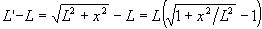
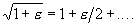
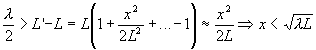

Vägskillnaden mellan L och L' blir

Nu behöver vi en serieutveckling (känns det lite i maggropen när man säger det ordet?): om
Använder vi detta ovan och sätter att vägskillnaden ska vara max en halv våglängd får vi
